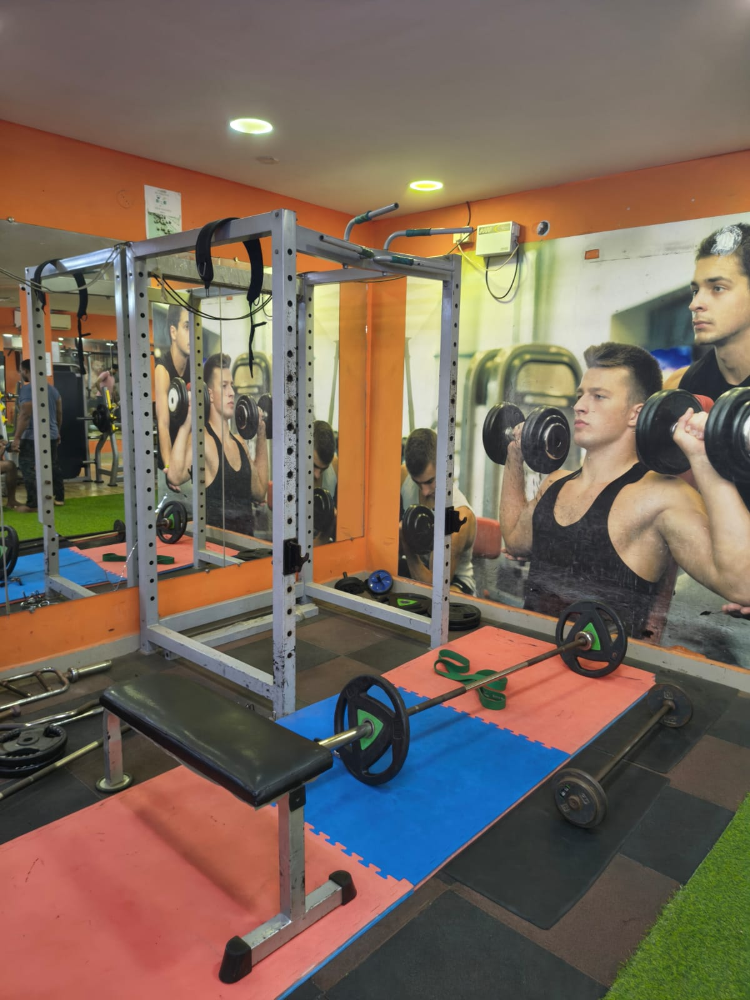

Strength & muscle
Work with dumbbells, barbells, the power rack and resistance machines, with a routine built around steady progression.
PERSONAL TRAINING · PORUR, CHENNAI
Looking for a personal trainer near Porur? At Shree Fitness Unisex Studio AC, personal training starts with a conversation with Sakthi Master about what you want to work towards, your experience and the time you have.
You train on an air-conditioned gym floor with free weights, a power rack, benches, cable and resistance machines, and a cardio section.

01 / WHAT YOU CAN WORK ON
EVERY STARTING POINT COUNTS.Work with dumbbells, barbells, the power rack and resistance machines, with a routine built around steady progression.
Combine strength work with treadmills, spin bikes and the elliptical cross-trainer, and discuss everyday food habits that support training.
New to the gym or returning after a break? Learn your way around the equipment and agree a pace that suits you.
Shree Fitness is a unisex studio. Personal training is open to everyone, whatever your goal or starting point.
02 / HOW IT STARTS
ONE STEP AT A TIME.Book a consultation, call 8778642342 or send a WhatsApp message.
Meet Sakthi Master in Porur, see the gym floor and talk through your experience and schedule.
Agree session timings and fees directly with the trainer, then make it your routine.
Can’t make it to Porur? Train online with Sakthi Master ↗
PERSONAL TRAINING QUESTIONS
Fees depend on the plan you agree with the trainer. Call Sakthi Master on 8778642342 or book a consultation to discuss current fees.
Yes. The first step is a conversation about your experience, goals and schedule, so the trainer can suggest a starting point.
The studio is open Monday to Saturday, 5:30 AM to 9:30 PM, and Sunday, 7:00 AM to 11:00 AM. Session timings are agreed with the trainer.
Yes. Shree Fitness is a unisex studio, and personal training is open to both men and women.
At the studio: No.3, Sakthi Nagar 4th Street, Somasundaram Avenue, Porur, Chennai 600116, upstairs at the BSNL Telephone Exchange, opposite Saravana Stores. Get directions. Online training is also available.